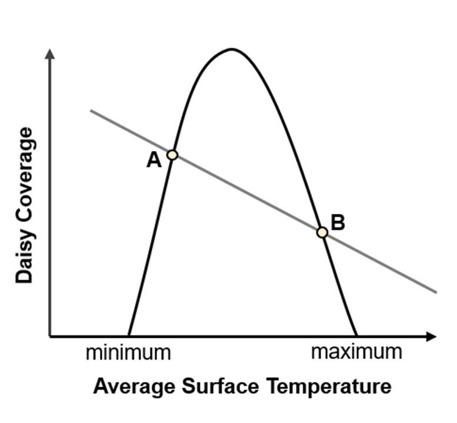
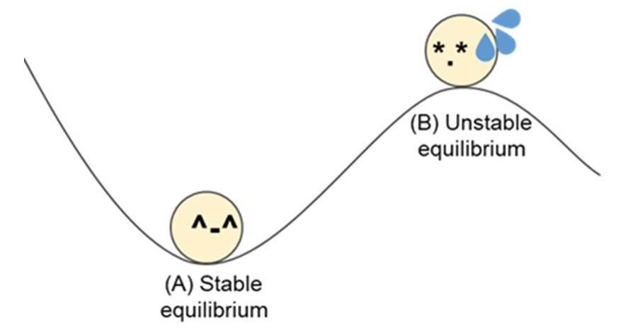
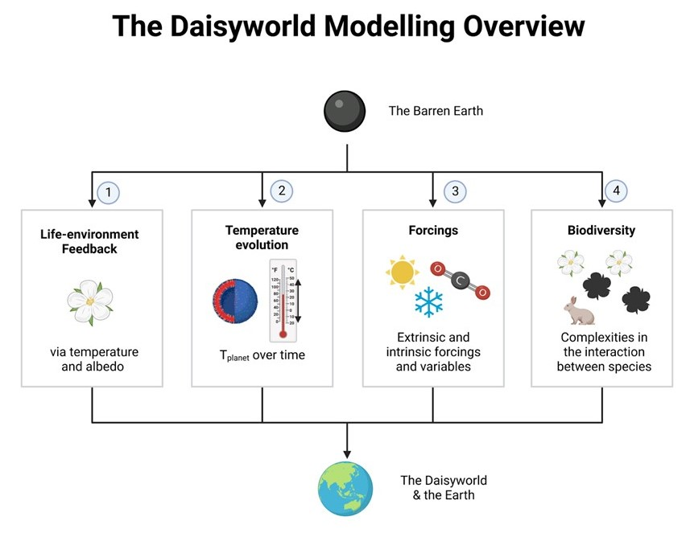
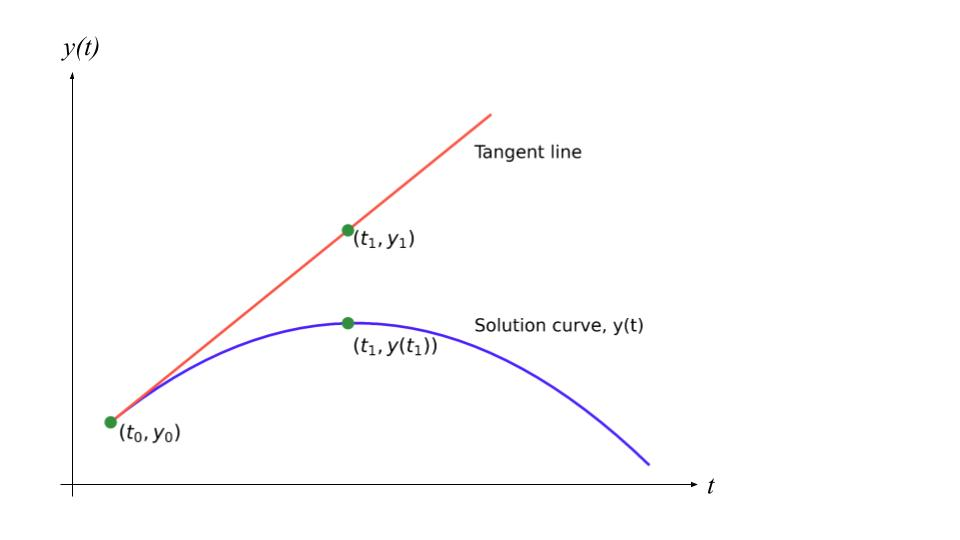

Theme 2: How does life affect the planet’s temperature stability?
Daisyworld
1 | OVERVIEW
LEARNING OBJECTIVES
- Able to understand the characteristics of black and white daisies
- Able to interpret the outcomes of the Daisyworld model on the temperature of a planet and how it supports the Gaia hypothesis
- Understand how factors (e.g. daisy growth rate, daisy local temperature, daisy coverage, available ground, planet albedo, planet temperature) affect the Daisyworld
- Recognise the strengths of modelling to observe numerous interactions within a system and appreciate its applications in real life
PREAMBLE
In a simplistic Daisyworld model, we are only interested in black and white daisies, both of which have distinct impacts on the planet. The growth rate of daisies depends on the planet’s temperature, which in turn is modified by the daisies as they absorb differing amounts of solar radiation. As the daisies begin growing over time, the amount of available ground also decreases with time. We will discuss the single-colour model with solely white daisies and continue to cover the white-and-black daisy model via modelling practices.
RECOMMENDED READING
WATSON, A.J. and LOVELOCK, J.E. (1983), Biological homeostasis of the global environment: the parable of Daisyworld. Tellus B, 35B: 284-289. https://onlinelibrary.wiley.com/doi/abs/10.1111/j.1600-0889.1983.tb00031.x
USEFUL VIDEOS
2 | FUNDAMENTAL CONCEPTS OF DAISYWORLD
2.1 SDG 11 : SUSTAINABLE CITIES AND COMMUNITIES
SDG 11 of the United National Sustainable Development Goals is to make cities and human settlements inclusive, safe, resilient, and sustainable [1]. Human settlements are highly complex, involving different interactions between nature and man. However, by breaking down these systems into fundamental parts, we can study these interactions and the effects of changing biological or physical variables.
Starting with a simplified Daisyworld model, we will delve into the effects of different environmental factors on the daisy growth, before looking into extending the model to study other factors.
2.2 THE DAISYWORLD FEEDBACK LOOP
(A) Effect of the Daisies on the Planet’s Temperature
Just as how darker-coloured objects tend to absorb more heat and lighter-coloured objects reflect more wavelengths and thus absorb less heat, the same could be said about the colour of daisies in Daisyworld. Here, we will look at white and black daisies.

With reference to Figure 1, answer the following questions.
- What is the effect of white and black daisies on the temperature of the planet ?
- What are the differences between the roles of the black and white daisies in the model ?
- What do daisies, temperature luminosity, albedo in the Daisyworld represent in the actual biosphere ?
- Why does the number of white daisies affect the surface temperature in a negative, linear relationship ?
Compared to the same area of barren soil (e.g., 0.4), vegetation with white daisies corresponds to a higher albedo (e.g., 0.7) and thereby higher reflection rate of light and lesser retention of heat. Therefore, white daisies have an effect that decreases the temperature of the planet; vice versa for black daisies, they tend to increase the temperature of the planet with their lower albedo as lesser amount of solar energy is reflected due to their low albedo (e.g., 0.2).
The two daisies have countering impacts on the temperature of the planet, if addressed in the same area of land. They represent different propensity of the planet’s temperature to change, as the equilibrium points of growth for the two daisies are not necessarily the same.
vegetations (daisies), temperature (climactic consequence), luminosity (activity of the Sun) and albedo (greenhouse effect or the albedo of Earth’s surface layers).
This is only a representation of the relationship between white daisy coverage and temperature, which does not factor in the growth rate of daisies. Normally, a larger surface area is covered by white daisies; the closer the planet’s albedo leans towards that of the white daisy vegetation. Given the same solar flux-in, the more light will be reflected by daisies than barren ground (\(albedo = {reflected \ light \over total \ light}\)) and therefore the more daisies there are, the more the temperature will be negatively affected. The relationship being linear involves the grey body premise where \(F_{in} = A + B \cdot T_p\) (A and B are coefficients that are empirically confirmed).
(B) Effect of Temperature on the Daisy’s Coverage
As with how the colour of daisies affect the surface temperature, the temperature also affects Daisy growth. In this case, white daisies possess a parabolic growth curve in relation to the planet temperature (Figure 2).

Discussion Corner
Create a white daisyworld feedback loop, illustrating how white daisy coverage is affected by different environmental variables. Include any necessary equations and variables.
2.3 EQUILIBRIUM STATES IN THE DAISYWORLD
2.3.1 Mutual Responses due to Couplings in the Daisyworld
The surface temperature of the planet is dependent on the characteristics of daisies growing on the planet [2]. For example, white daisies reflect more incoming solar radiation back into the atmosphere. This reduces the amount of incoming solar radiation absorbed by the available ground, which in turn, reduces the surface temperature of the planet.
The surface temperature response to daisy coverage in this negative coupling is implicitly implied by albedo, which reduces the capacity of the planet’s surface to take up solar flux [2]. On the other hand, white daisies possess a parabolic growth curve to do with the local temperature. As such, the abundance of white daisies will become optimal when it is at the optimum temperature but decreases to zero when the temperature goes to the two extremities. Local temperature is the condition that caps the population size of white daisies.
However, with increasing luminosity and thus increasing surface temperatures, white daisies are no longer able to grow as quickly as before, as temperatures are beyond optimum temperatures (Figure 3). Hence, there will be a decrease in white daisy coverage over time, after the optimum surface temperature.

With the two coupling relationships overlaid, the intersection points of the plots of average surface temperature against daisy coverage and daisy coverage against average surface temperature (Figure 3) show the two possible equilibrium states. How the system will respond to perturbations will depend on the type of steady states the system is at.

We can refer to the equilibrium state to be steady (Figure 4(A)), unsteady (Figure 4(B)), and neutral. In this section, we are interested in steady and unsteady states. These are defined below [3]:
| Stable equilibrium | When displaced from its equilibrium, a net force will be experienced by the object in the opposing direction (restoring force). |
| Unstable equilibrium | When displaced from its equilibrium, a net force will be experienced by the object in the same direction. |
If you move / push the ball away from A what happens ?
If the same was done with B, what happens ?
Using this analogy, explain what a stable and unstable steady state / equilibrium is.
Restoration back to the equilibrium point (A).
Either dropping to A where the system will become stable, or falling down the slippery slope until it reaches the extremes.
Share your answers in class
Discussion Corner
Going back to Figure 1, how can you determine if an equilibrium point (intersection of the two plots) is stable or unstable ?
3 | HOW DOES THE PLANET’S TEMPERATURE CHANGE WITH BLACK OR WHITE DAISIES?
Now, we will move on to create a computer model based on Lovelock and Watson’s mathematical model. This will help to understand the evolution of life and the planet’s temperature. To begin, we will build a one-daisy model and look at white and black daisies separately.

3.1 PLOTTING DAISY COVERAGE AGAINST TIME
Let us begin by first looking at how the daisy’s area changes with time. As we do not have a simple equation linking both variables, we will use the Euler’s method to determine a function of how the daisy’s area changes with time.
Euler’s Method
Theoretically, differential equations may be solved by separation of variables. However, in more complex equations, this may prove to be challenging. Instead, an alternative way to solve differential equations is used, that is, Euler’s method.
Euler’s method makes use of the idea of linear approximation, which involves the use of tangent lines at the point of the solution curve to approximate the solution to the initial value problem (values of the parameters when \(t = 0\)).

Euler’s method is used to solve differential equations of the form :
\[{dy \over dx} = f(t, y)\]
with initial conditions:
\[ t = t_0, y(t_0) = y_0\] \[{ \left.\frac{dy}{dx}\right|_{t_0, y_0} } = f(t_0, y_0)\]
If we take a point close to \(t_0\) and call it \(t_1\), we can rewrite the equation as
\[ y_1 = y_0 + { \left.\frac{dy}{dx}\right|_{t_0, y_0} } (t_1 - t_0) = y_0 + f(t_0, y_0) \cdot \Delta t \]
By taking numerous values of t and substituting it into the equation, we can obtain a relationship between \(y_n\) and \(y_{n+1}\) and can then generalise the Euler’s method formula to be :
\[ y_{n+1} = y_n + f(t_n, y_n) \cdot \Delta t \]
The increment \(\Delta A_w\) is approximated from \(dA_w\) in the relevant differential equation. Express \(\Delta A_w\) in terms of \(dA_w\).
Given the initial value of the daisies (\(A_{w0}=0.01\)) can you calculate the value of the daisies after one timestep (\(A_{w1}\))?
\(\Delta A_w \approx dA_w = A_w(\chi \beta_w -\gamma) * dt\)
You may attempt this by hand, but what’s the point when you can use python!
Create a loop that can help you generate the data (\(A_{w1}, A_{w2}, A_{w_3}, ...\)) for a specific number of timesteps, \(\Delta t\) (you may start with 50 iterations).
Plot the graph of daisy coverage (\(A_w\)) against time (\(t\)) for white daisies.
Repeat (a) and (b) for black daisies.
It may be a good idea to make use of a flowchart to have a better idea of the algorithm for the code. We have created this for you: 
You may find that referring to the white daisy feedback loop may help with understanding how to update the variables.
3.2 HOW DOES THE PLANET TEMPERATURE CHANGE WITH TIME?
Now, we are interested in planet temperature. However, similar to daisy coverage, we do not have a direct simple equation that links the planet temperature with time. Identify the main equation in the paper that shows the change in temperature.
Looking at the equation, what variable(s) are changing with time ?
Albedo of the planet.
By making small changes to the code in Exercise 4, plot the planet temperature against time.
4 | HOW DOES THE PLANET TEMPERATURE CHANGE WITH THE PRESENCE OF BOTH BLACK AND WHITE DAISIES?
We have completed the first steps of building our model ! Let us move on to observe the interactions of black and white daisies on a planet. We are now looking at a planet with white and black daisies growing together. Adapt your equations to take into account both daisies at the same time.
Plot the daisy coverage of black (\(A_b\)) and white daisies (\(A_w\)) against time (\(t\)) on the same graph. On another graph, plot the planet temperature (\(T_p\)) against (\(t\)).
The flowchart below might give you a better idea of how to start coding. The code is built upon what you have written for the one-daisy model. 
Discussion Corner
- Compare the one-daisy plots (white and black) with the two-daisy plot for a fixed luminosity. How does the temperature of the planet vary ?
- Do you get the same values of equilibrium for the area of the daisies and the temperature of the planet ? Explain.
5 | HOW DOES PLANET TEMPERATURE AND DAISY COVERAGE CHANGE WITH LUMINOSITY?
Let’s complete your code so that you can directly plot the steady state values \(A_w\), \(A_b\), and \(T_p\) (in \(\degree C\)) for increasing luminosity (\(L\)).
Increase \(L\) from [0.5 to 1.6] and decreasing from [1.6 to 0.5]. Decide the best increment for \(L\).
Plot two graphs, \(A_w\) and \(A_b\) against \(L\) (in the same graph) and \(T_p\) against \(L\).
No flowchart is given this time, but try your best to produce one for yourself. Here are some hints:
- What variables are you storing when running the code chunk for a particular value for luminosity?
- How would you repeat the process for multiple values of luminosity?
- At each particular value of luminosity, what should be happening to the daisyworld? Should there be changes to the previous code?
Start with just one daisy first before attempting to model for two daisies.
To complete your code, you need to create an outer loop with the luminosity changing with an increment. Remember that for each luminosity you are only interested in the steady state values (the only values you need to store). That means you should decide how many iterations (time) you need in your inner loop to reach equilibrium.
Do not let the daisies die out completely! Remember to set a threshold, else the daisies cannot grow again when \(L\) is decreasing.
6 | ALTERNATIVE METHOD TO VISUALISE EQUILIBRIA - THE STATE SPACE PICTURE
In this section, instead of looking how the area varies with time, we are looking at how varies with area. Run the Python code [Daisyworld State Space Picture.ipynb] written by Park Kun Hee (SPS Batch 2015) available in the same Daisyworld Google Classroom post.
6.1 STEADY STATE SOLUTIONS AND STABILITY
We first look at how we can find steady state solutions and their stabilities with this new picture.
6.2 2-DIMENSIONAL GENERALISATION
For the two-daisy case, the state of the system is totally characterised by two variables, \[ A_b \in [0,1] \ and \ A_w \in [0,1], \ constrained \ by \ A_b + A_w \le 1\]
Therefore, the state space, where all possible states reside, is a region in two-dimensional space bounded by a triangle, whose vertices are at (0,0), (0,1) and (1,0).
Just like the one-daisy case, a state of the system is represented by a point in the triangular region, and its time evolution is represented by a continuous slide across the region. However, unlike the one-daisy case, there are now two different rates of change of area that direct how to evolve the system, namely,
- tells us where to go in the \(A_b\)-direction (taken to be the horizontal axis)
- tells us where to go in the \(A_w\)-direction (taken to be the vertical axis)
We may therefore define a vector \(v\) that consists of two components: magnitude of in the \(A_b\)-direction, and magnitude of in the \(A_w\)-direction.
6.3 BIFURCATION
The bifurcation plot shows how steady states change with respect to a parameter. In this example, we will choose the parameter to be luminosity \(L\), you may try other parameters as well.
7 | DELIVERABLES
Preparatory work: Students are to complete the assigned work before their lecture and IS sessions to ensure for a smooth and fruitful discussion session with their groupmates and mentors.

8 | REFERENCES
[1] Conserve and sustainably use the oceans, seas and marine resources for sustainable development [Internet]. United Nations, 2022. Available from: https://sdgs.un.org/goals/goal14
[2] Kump LR, Kasting JF, and Crane RG. The earth system. Upper Saddle River, NJ: Pearson Prentice Hall, 2011.
[3] College Physics. UH Pressbooks; Chapter 9.3 Stability. Available from: http://pressbooks-dev.oer.hawaii.edu/collegephysics/chapter/9-3-stability/#:~:text=There%20are%20three%20types%20of,this%20module%20illustrate%20various%20examples
APPENDIX
Constants
| Insolation constant | \(S_0 = 917 W \cdot m^{-2}\) | |
| Luminosity multiplier | $ L = [0.4, 1.7]$ | | |
| Insulation | \(R = 0.2\) | |
| Death rate | \(\gamma = 0.3\) | |
| Stefan-Boltzmann constant | \(\sigma = 5.670367 \times 10 ^{-8} W \cdot m^{-2} \cdot K^{-4}\) | |
| Albedo values | \(\alpha_b = 0.25, \alpha_w = 0.75, \alpha_g = 0.5\) | |
| Temperature | \(T_{opt} = 22.5 \degree C, T_{min} = 5 \degree C, T_{max} = 40 \degree C\) | |
Equations
| Daisy’s growth, \(\beta_i\) | \(\beta_i = 1 - 0.003265 \times (22.5 - T_i)^2\) | |
| Daisy’s local temperature, \(T_i\) | \(T_i^4 = RL \times {S_0 \over \sigma} \times (\alpha_p - \alpha_i) + T_p^4\) | |
| Daisy’s coverage, \(A_i\) | \({dA_i \over dt} = A_i(x\beta_i - \gamma)\) | |
| Available ground, \(x\) | \(x = A_g = 1 - A_w - A_b\) | |
| Planet’s albedo, \(\alpha_p\) | \(\alpha_p = A_w\alpha_w + A_b\alpha_b + A_g\alpha_g\) | |
| Planet’s temperature, \(T_p\) | \(T_p^4 = L \times {S_0 \over \sigma}(1 - \alpha_p)\) | |